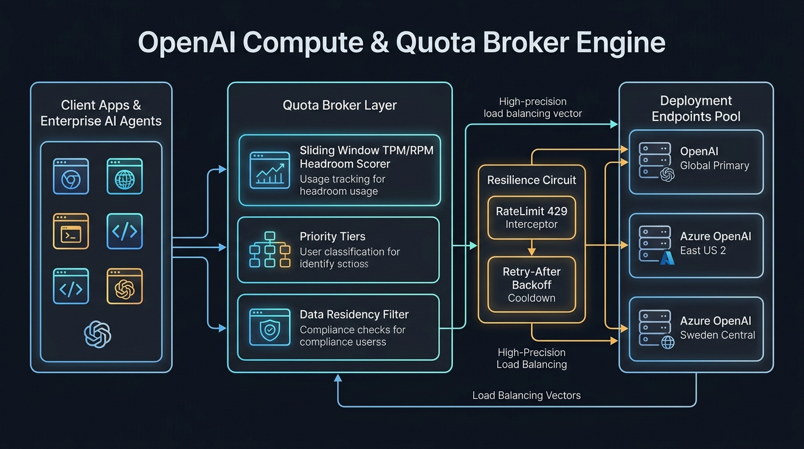

Broker Policy
Balance traffic across OpenAI and Azure OpenAI deployments by TPM/RPM headroom, cost and priority tier.
Routing Simulation & Config
Deployments in Pool
3
Aggregate TPM
3.8M
Next Request Routed To
—
Click "Generate Broker Config" to build the routing policy...
Broker Topology

Why a Quota Broker?
Every OpenAI and Azure OpenAI deployment has its own tokens-per-minute (TPM) and requests-per-minute (RPM) limits. At enterprise scale, one deployment saturates and requests start failing with HTTP 429 while other deployments sit idle. The broker treats all deployments as one pool and sends each request where there is the most headroom per unit cost.
Production Patterns
- Headroom scoring: score = min(TPM left %, RPM left %) ÷ cost weight; saturated deployments are skipped.
- Priority tiers: reserve capacity so batch jobs never starve interactive user traffic.
- Data residency: restrict EU workloads to EU-region deployments.
- Resilience: honor
Retry-After, exponential backoff with jitter, and circuit breakers per deployment.
Infrastructure & Software Technology Stack
Cloud Deployment Targets
- OpenAI Global: Direct API tier with 2.0M TPM & 10,000 RPM capacity
- Azure OpenAI US: East US 2 PTU / Pay-As-You-Go region
- Azure OpenAI EU: Sweden Central (Strict GDPR & EU data boundary)
- Egress Ingress: Multi-region Envoy Proxy mesh with latency probes
Broker Runtime & Quota
- Runtime: Python 3.11+ / AsyncIO sliding-window quota tracker
- Rate-Limiting Core: Sliding 60-second deque with token timestamps
- Resilience Circuit: Cooldown state machine honoring
Retry-After - Priority Partitioning: Interactive (60%), Batch (30%), Dev (10%)
Monitoring & FinOps
- Telemetry: Prometheus metrics endpoint with TPM/RPM saturation counters
- FinOps Weights: Dynamic cost weighting factor per deployment
- Tracing: OpenTelemetry context propagation across routing hops
- Failover: Automatic fallback queue with jittered exponential backoff